Recherche und Werkbeschreibung: Roman Pilz. Text und Fotografien wechseln sich wie in einem Magazin ab. Ein Klick auf ein Bild öffnet die Großansicht.
In Chemnitz werden sie einfach die "Schillingschen Figuren" genannt – gemeint sind die über mehrere Jahre, eigentlich für die Freitreppe zu den Brühlschen Terrassen in Dresden geschaffenen Skulpturen aus Elbsandstein "Die vier Tageszeiten". Johannes Schilling hat sich mit diesen Figuren seinen Ruhm begründet: Er entwarf sie 1860 für einen Wettbewerb des Sächsischen Innenministeriums zur Ausschmückung der bereits 1814 fertiggestellten Freitreppe vom Schloßplatz zu den Terrassen.
Form und Gestalt der Figuren sind der Aufgabe entsprechend erdacht für eine königliche Residenzstadt – Größe, Ausrichtung und Thema der Figuren sind auf diese Aufgabe abgestimmt. Die Figuren wurden nach Schillings selbst geschaffenen Modellen von Franz Schwarz (1841–1911) überlebensgroß in Elbsandstein ausgeführt. Die ersten beiden Figurengruppen "Der Abend" sowie "Die Nacht" wurden 1868 jeweils links und rechts am unteren Ende der Treppenwangen aufgestellt, die anderen beiden Figuren, "Der Morgen" und "Der Tag", 1871 oben auf dem etwa 10 Meter hohen Niveau der Terrassen.
Johannes Schilling wurde 1828 in Mittweida geboren und wuchs seit 1829 in Dresden auf. 1910 verstarb er in Klotzsche bei Dresden. Schilling, der aus einem gebildeten Elternhaus stammte, begann bereits mit 14 Jahren sein Studium an der Sächsischen Kunstakademie in Dresden: Zunächst erlernte er die Grundlagen des Zeichnens und der Komposition bei Carl Gottlob Peschel (1798–1879).
Anschließend wechselte er von 1846 bis 1850 in die Bildhauerklasse von Ernst Rietschel (1804–61), einem der wichtigen Begründer der Dresdner Bildhauerschule. Danach setzte er von 1851 bis 1852 seine Studien bei bedeutenden Repräsentanten der Berliner Bildhauerschule fort, nämlich bei Christian Daniel Rauch (1777–1857), dem Lehrer von Rietschel, und bei Johann Friedrich Drake (1805–82), der auch bei Rauch gelernt hatte. Im Sommer 1851 besuchte er das Museum von Bertel Thorvaldsen (1770-1844) in Kopenhagen, der ein einflussreicher Bildhauer des dänischen Klassizismus war.
1852 kehrte er nach Dresden zurück, wo er 1853 als Schüler und Gehilfe im Atelier von Ernst Julius Hähnel (1811–91) wurde, dem zweiten wichtigen Bildhauer in der Dresdner Akademie. 1854 unternahm er eine Studienreise nach Rom, für die ihm 1855 auch das Rom-Stipendium der Dresdner Akademie bewilligt wurde. 1856 gründete er sein eigenes Atelier in Dresden.
Schilling wurde ab 1868 selbst zum Professor an der Kgl. Kunstakademie zu Dresden und beförderte als Lehrer zahlreicher Schüler den in dieser Epoche weltweit wirkenden Einfluss der Dresdner Bildhauerschule. Seine Bildhauerarbeiten sind stark von der Romantik und der Klassik geprägt und zeugen von historischen, literarischen und musikalischen Inspirationen.
Mit seinen vier ab 1860 für die Freitreppe zur Brühlschen Terrasse entworfenen allegorischen Figuren der Tageszeiten begründete er seine weit über Dresden hinausreichende Anerkennung. Weitere bedeutende Werke sind das von 1871 bis 1883 bei Rüdesheim am Rhein errichtete Niederwalddenkmal sowie die Quadriga der Semperoper und das Reiterstandbild für König Johann von Sachsen. Für Chemnitz entwarf er 1888 auch das Grabmal des Industriellen Richard Hartmann, das heute auf dem Städtischen Friedhof in Bernsdorf an den "Lokomotivenkönig" erinnert.
Ein Tag wie ein ganzes Leben
Die Figurengruppe „Vier Tageszeiten“ (1868/1871) von Johannes Schilling
Die großzügigen Treppen am Dresdner Elbufer sind etwa 14 Meter breit und haben 41 Stufen. Beim Aufstieg der Treppe sollte der gebildete Bürger ins Schwärmen geraten - wie aus einem kriegerischen Bollwerk ein Ort der Künste und des Genusses werden kann, mit Palästen, Gärten, Akademie und Museum. Die Allegorie versinnbildlicht, wie der Mensch zwar dem Lauf der Zeit unterliegt, aber auch, dass er durch tätiges Schaffen Dinge zu leisten vermag, die größer und dauernder sind als der Einzelne.
Nach dem Anspruch des Klassizismus dient die klassische Antike als Vorbild - Wissen und Naturerforschung sind der Weg, ähnliche Erfolge in der Gegenwart zu feiern. Schilling und seinen Zeitgenossen vermittelte bürgerliche Bildung die Göttererzählungen in Texten von Homer und Hesiod. Goethe und die Romantiker sind als neuere Vorbilder. Konkrete Skulpturen der Antike und der Renaissance konnte Schilling während seines zweijährigen Aufenthalts in Rom studieren. Zusätzlich bestimmten Werke des dänischen Bildhauers Bertel Thorvaldsen und Michelangelos die Komposition der „Tageszeiten“.
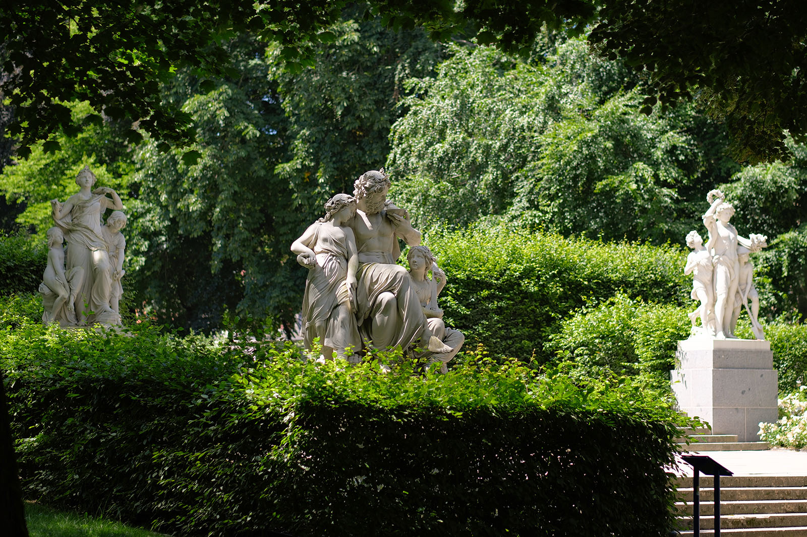
Schilling verbindet Einflüsse der Klassik mit der Natursymbolik der Romantiker wie Novalis und Runge, der selbst einen Zyklus zu den Tageszeiten geschaffen hatte. Doch besonders Goethes "Wilhelm Meister" nahm Einfluss auf das Werk des Bildhauers: Er stellt seinem Wettbewerbsentwurf das dort entnommene Zitat "Die Kunst ist lang, das Leben ist kurz" voran. In dem Roman werden Streben nach Bildung, Schönheit und Harmonie verhandelt. Goethe kreiert dort die berühmte Figur der Mignon, die als knabenhaftes Mädchen, Waisenkind und Sängerin zur bewundernden Begleiterin von Wilhelm wird. Der tragischen Figur werden vom Dichter die schönsten Lieder zur Italiensehnsucht in den Mund gelegt.
Die Figuren im Einzelnen:
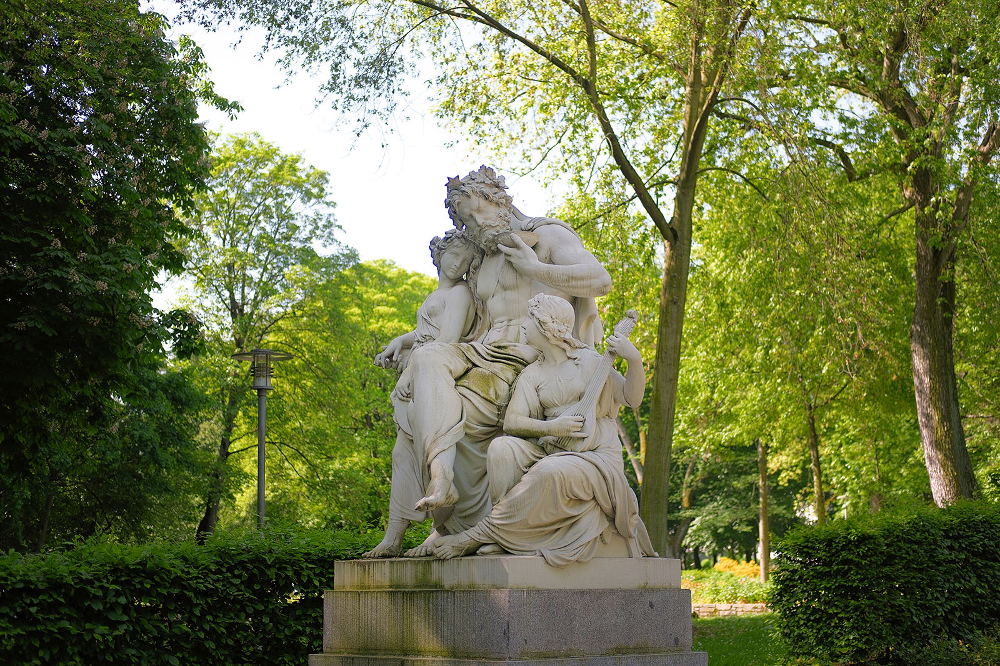
"Die Nacht, mit Schlaf und Traum" (1866 fertiggestellt) – Die Hauptfigur sitzt auf einer Art steinernen Bank, die rückseitig mit dem Schlafmohn verziert ist. Die Nacht (griechisch Nyx) ist eine junge Frau, deren Körper von einem faltenschlagenden Kleid und einem langen Schleier umspielt wird. Sie neigt ihren Kopf sanft nach rechts, so wie der Junge, der zu ihrer Rechten angelehnt den Schlaf (Hypnos) verkörpert. Der Schleier wird über ihrem in Locken herabfallenden Haar von einer Stirnbinde mit einer liegenden Mondsichel gehalten – eigentlich das Symbol der Mondgöttin Selene. Während sie mit der Linken sanft die Hand des Schlafes hält, ist sie gerade dabei, mit ihrer Rechten den Schleier schützend über den fast nackten Jungen zu legen.
Er scheint erst kurz zuvor eingeschlafen, denn noch ist dem Lockenkopf die beruhigende Hand nicht entglitten, so wie die trockenen Kapseln des Schlafmohns in seiner Rechten, die nur noch locker zwischen seinen Fingern liegen. Meist wird die Nacht mit Schlaf und Tod dargestellt, doch Schilling entschied sich für eine friedlichere Gestalt aus dem Gefolge der Nacht, den Gott der Träume (Morpheus). Obwohl er in jeder Gestalt erscheinen kann, ist er hier als geflügelter Jüngling dargestellt, der wie ein Schmetterling von links herangeschwebt ist, um dem Schlafenden leise einen Traum einzuflüstern.
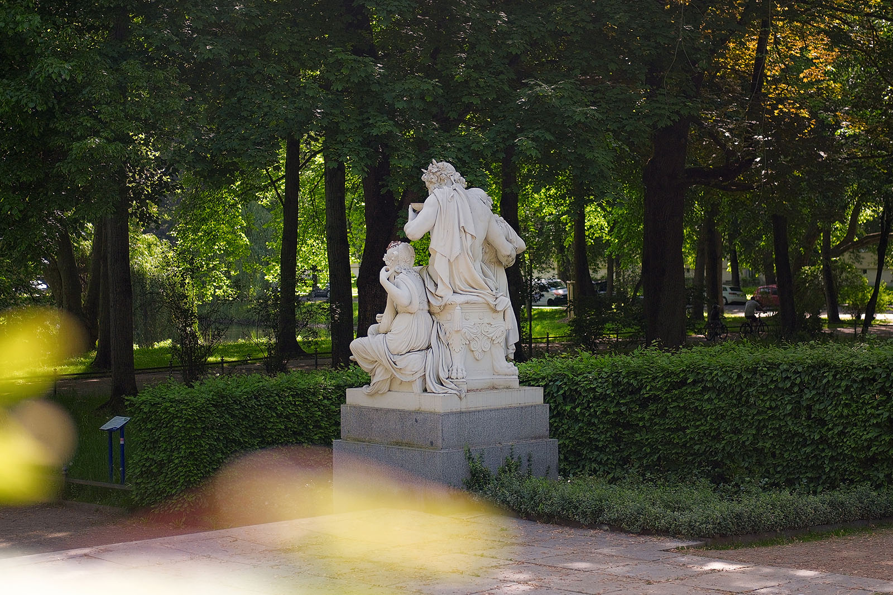
"Der Abend, mit der Musik und dem Tanz" (1868 fertiggestellt) - Die männliche Repräsentation des Abends sitzt auf einem Kissen auf einem von Blattwerk geschmückten Hocker mit Füßen aus Löwenpranken. Der freie Oberkörper und die kräftigen Arme des Mannes werden durch eine entspannt nach links unten geneigte Haltung stark gemildert. Der Kopf ist inspiriert von antiken Darstellungen des Göttervaters Zeus – mit vollem Bart, Eichenkranz und Abendstern. Ein schmaler Riemen hält ein Tuch über seiner Schulter, seine Beine ruhen zusammengeschlagen unter einem Gewand. Der Abend genießt die Früchte seiner Arbeit, er hebt eine Schale mit Wein zu seinen Lippen, lauscht und betrachtet die zwei blumenbekränzten Mädchen, die für Tanz und Musik stehen.
Korrespondierend zur Nacht sind die Figuren stufenweise gestaffelt, ihre Glieder ragen teilweise in den Raum über die quadratische Basis hinaus. Das Mädchen, das unten links zu Füßen des Abends sitzt, spielt mit ihrer Mandoline ein Lied und verweist damit deutlich auf die Gestalt der Mignon von Goethe. Ihr folgt die wohlwollende Aufmerksamkeit des Tages, an dessen rechter Schulter sich die Tänzerin mit dem Tamburin lehnt. Noch locker gehalten von der rechten Hand des Abends, scheint das jugendliche Mädchen die Klänge wie der Alte aufzunehmen, um schon mit dem linken Schritt zum Tanz zu schreiten und sich drehend aus der Umarmung zu befreien.
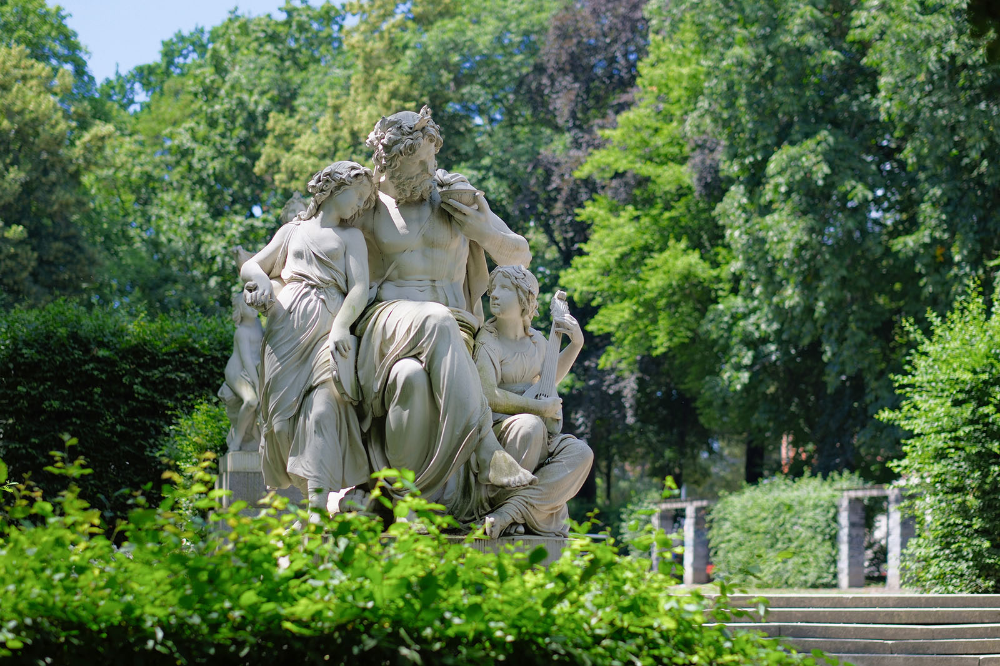
"Der Morgen, mit dem Erwachen und dem Morgentau" (1871 fertiggestellt) - Die weibliche Symbolfigur des Morgens ist wie der Tag als Standfigur ausgeführt. Sie steht über dem Abend und trägt an ihrer Stirn den Morgenstern. Sie hat den Mund leicht geöffnet, als hole sie Luft, ihre Brust hebt sich unter den Tüchern, die ihren Körper umfangen, und ihre Hände lüften die Schleier von ihren Schultern. Sie hat ihren Fuß auf einen Stein gestellt, erhebt sich also im wörtlichen Sinne. Ein noch unbekleidetes Kind, das "Erwachen", tut es ihr gleich und hat sich schon auf einen Felsen gesetzt, um die Sandalen zu binden und den Tag zu beginnen.
Das Mädchen zur Linken der Frauenfigur ist schon angekleidet und schreitet den Morgen umarmend barfuß nach vorne, wobei es aus einem spitzen Krug, der mit Tautropfen gefüllt ist, eine Lilie gießt. Die Lilie, wie die Darstellung des Kindes im Allgemeinen, steht für Unschuld und Reinheit. Kinder werden besonders von den Romantikern als Quell ursprünglicher Fantasie gesehen und auch bei Goethe wird Mignon als Engel mit Lilienstab zum himmlischen Wesen transzendiert, das durch ein Theaterspiel anderen Kindern den Weg des Guten, Rechten und Wahren aufzeigt.
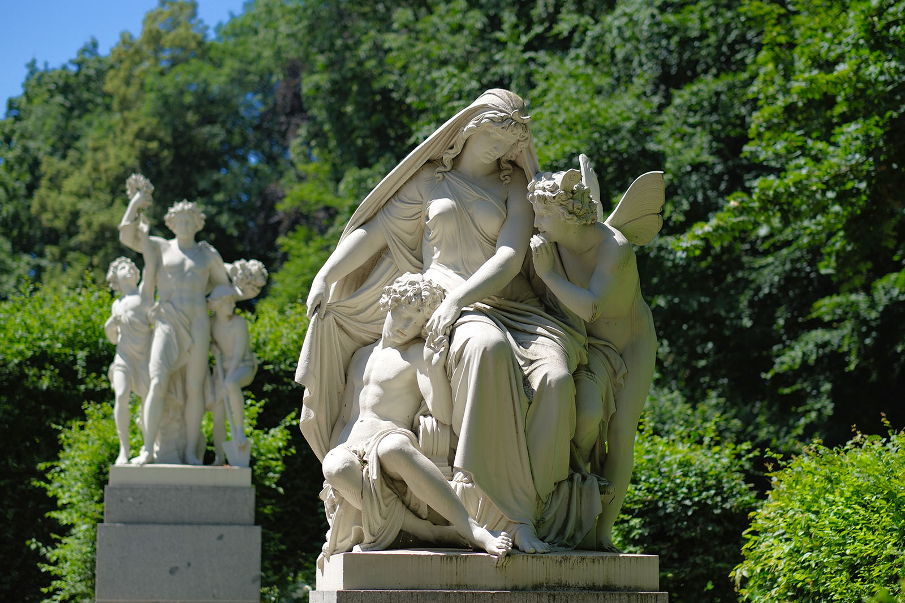
"Der Tag, mit Arbeit und Streben" (1871 fertiggestellt) - Die Verkörperung des Tages, manchmal auch als "Mittag" beschrieben, steht fast frontal vor dem Betrachter. Seine Strahlenkrone verweist auf Helios, den Gott der Sonne, der später in der Antike auch mit Apollon, dem Gott des Lichts, gleichgesetzt wird. Sicher war Schilling hier von einer der berühmtesten überlieferten Skulpturen der Antike, dem Apollo von Belvedere, inspiriert, der in den Vatikanischen Museen in Rom zu sehen ist. Die junge Männerfigur mit leichtem Bartansatz ist nur mit einem Tuch, das über der linken Schulter befestigt ist, bekleidet. Mit den beiden Kinderfiguren würdigt Schilling zugleich körperliche und geistige Tätigkeit des Menschen.
Die "Arbeit" am linken Standbein des Tages blickt umsichtig nach rechts, während sie die Schaufel in die Erde stößt. Ein griechischer Reisehut (Petasos) schützt den Kopf des Jungen vor der Sonne. Er wirkt keck und munter trotz der gebückten Haltung und der körperlichen Anstrengung, sicher weil über ihm das Füllhorn die Früchte seiner Mühen als Lohn vor Augen stellt. Das "Streben" dagegen reckt nach oben, wie zum Sprung bereit. Er richtet den Blick fest nach oben zum Lorbeerkranz, den der Tag in seiner Rechten hochhält. Als friedliches Symbol und Bürgerkrone gilt der Lorbeer als Ehrenzeichen für unsterbliche Leistungen in Wissenschaft, Dichtung und Sport.
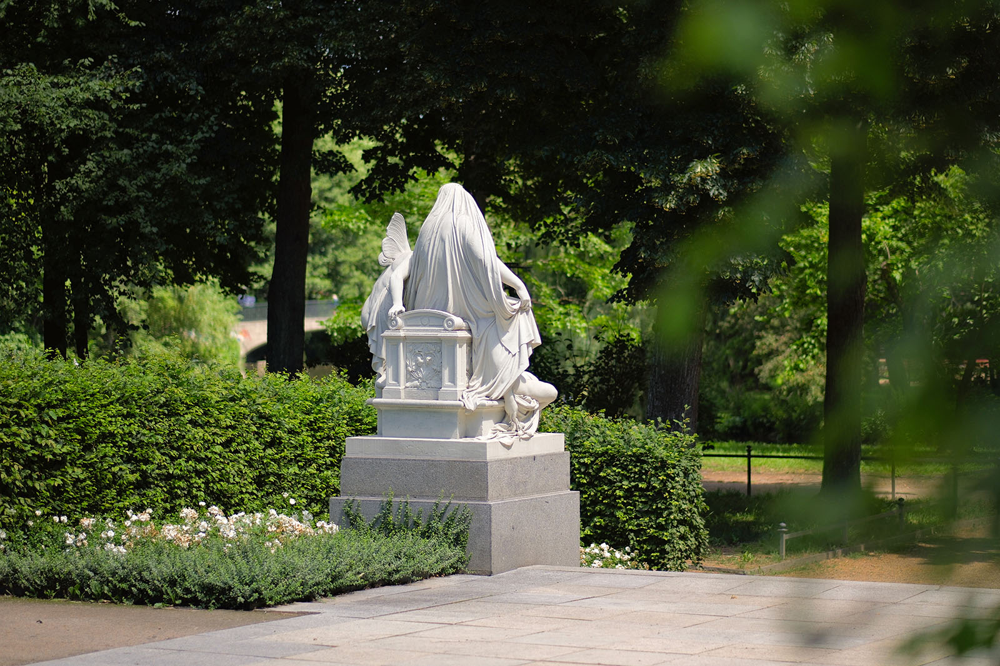
Alle Figuren wurden aus hellem, weißem Sandstein gearbeitet, der durch natürliche Prozesse nach kurzer Zeit eine schwarze Patina ausbildet. Schon Zeitgenossen kritisierten die Wahl des Materials und wünschten sich die Figuren aus Marmor (oder Bronze) – doch die Kosten wären wohl um einiges höher geworden. Ob dieser Prozess vom Künstler intendiert war, ist unklar. Fest steht, dass die Veränderungen des Natursteins als Verunreinigung und Schädigung betrachtet wurden und werden.
Dem vermeintlichen Ruß und der Witterung entgegenzuwirken, wurden die Skulpturen bereits 1883 vergoldet, das Ergebnis aber als unschön und nicht dauerhaft verworfen - Dresden beschloss, die Figuren zu ersetzen. So bekam Chemnitz die Skulpturen schließlich 1907 geschenkt, musste der Landesregierung aber sowohl die Übernahme der Transportkosten als auch die Restaurierung und einen angemessenen Standort dauerhaft zusichern.
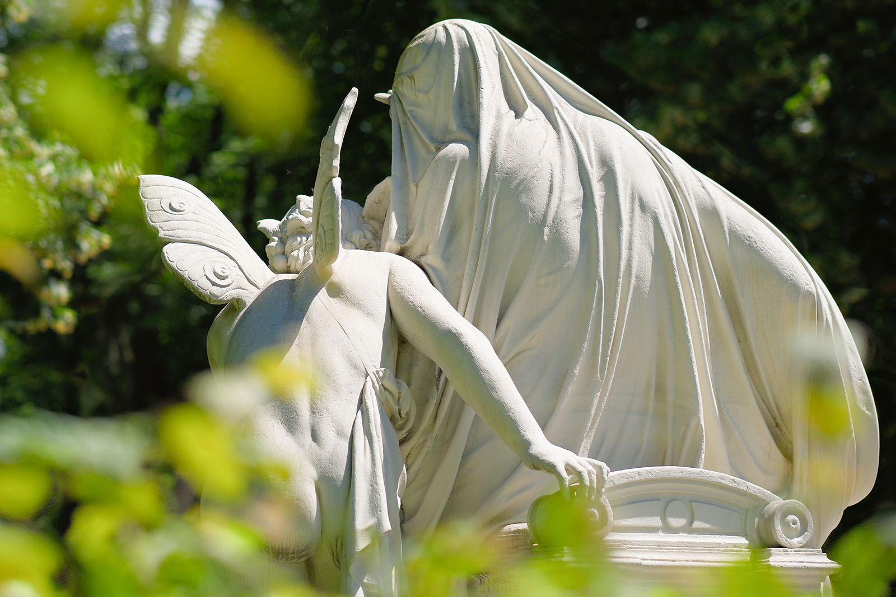
Eine erste Instandsetzung erfolgte also bereits, bevor die Figuren 1909 am Königsplatz (heute Theaterplatz) innerhalb eines Brunnenensembles neben der Petrikirche aufgestellt wurden. Doch die Patina bildet sich seitdem immer wieder, so dass seit Jahren alle Figuren im Winter eingehaust werden, um das Eindringen von Feuchtigkeit zu verringern und den Verdunklungsprozess zu verlangsamen. Zuletzt wurde 2017 ein weißer, an das Material angepasster Farbanstrich aufgetragen.
Dass die Figuren nicht lange am repräsentativen Theaterplatz bleiben konnten, war dem von lokalen Industriellen organisierten Bau des Hotels "Chemnitzer Hof" geschuldet. Nur bis 1928, also noch nicht einmal 20 Jahre, hatte der Brunnen mit den vier Figuren Bestand. Da auch hier Beschädigungen durch Umwelteinflüsse und "nicht kunstfreudige" Menschen beklagt wurden, wurde der Abbau genehmigt und begrüßt – doch die Figuren wurden zunächst bis 1936 eingelagert, solange, bis sie in den Neuen Schlossteichanlagen ihren gegenwärtigen Platz fanden.
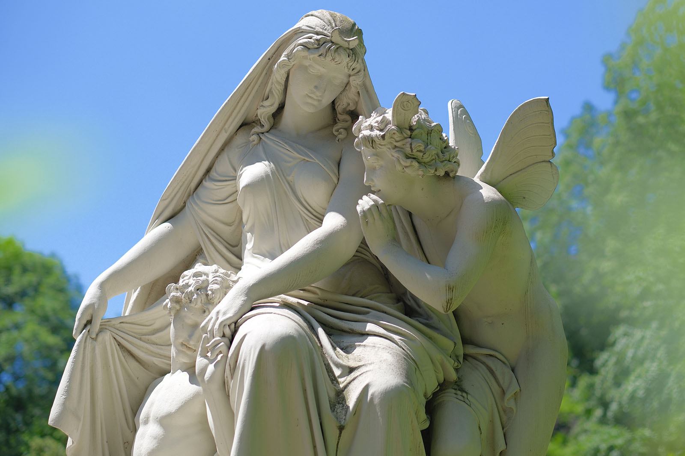
Der vom Stadtbaurat Fred Otto im Stil eines Barockgartens angelegte Park entstand auf dem Gelände der ehemaligen Hartmannfabrik. Er setzte die Skulpturen auf eine im Vergleich zu Dresden sehr niedrige Freitreppe, die auf einer Achse mit dem großen Springbrunnen und dem Müller-Zipper-Brunnen auf der Schlossteichinsel liegt - Pläne sahen eine zukünftige Verbindung durch eine neue Brücke zur Insel vor. Der Abstand der oberen Figuren ist etwas weiter als jener der unteren, so dass die Sicht auch durch den geringeren Höhenunterschied frei bleibt.
Die Figurengruppen sind heute in einem beliebten Freizeitareal zu genießen, das ähnlich wie die Brühlschen Terrassen eine Transformation der Nutzung erfahren hat: von einem Ort der Arbeit zwischen engen Fabrikhallen und Schloten zu einem grünen Park des Müßiggangs. In diesem Sinne ist der Ort gut gewählt, auch wenn sich manche Chemnitzer auch heute noch einen etwas sonnigeren und zentraleren Ort für die Tageszeiten wünschen. Es fügt sich auch, dass Schilling auch das Grabmal für Richard Hartmann geschaffen hat. Selbst Blinde können heute bei einer Stadtführung mittels kleiner dreidimensionaler Modelle die fließenden Linien und Formen des bedeutenden Dresdner Bildhauers begreifen.
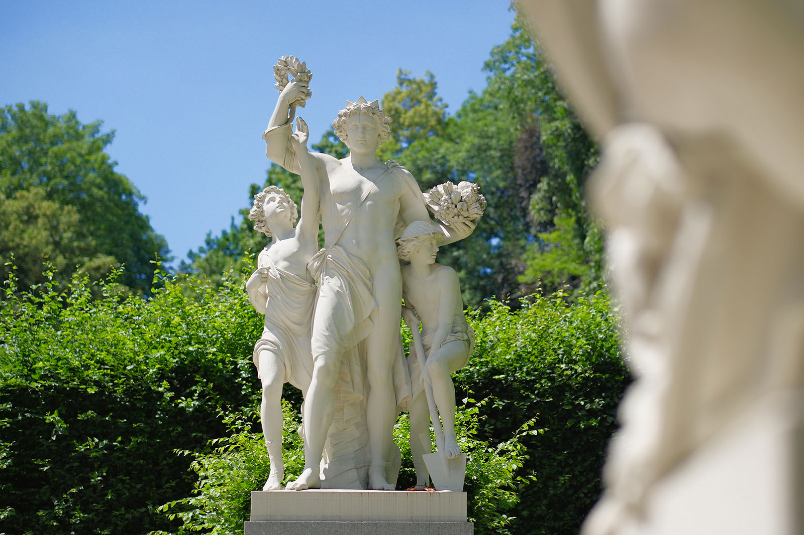
Johannes Schilling wurde 1828 in Mittweida geboren und wuchs seit 1829 in Dresden auf. 1910 verstarb er in Klotzsche bei Dresden. Schilling, der aus einem gebildeten Elternhaus stammte, begann bereits mit 14 Jahren sein Studium an der Sächsischen Kunstakademie in Dresden: Zunächst erlernte er die Grundlagen des Zeichnens und der Komposition bei Carl Gottlob Peschel (1798–1879).
Anschließend wechselte er von 1846 bis 1850 in die Bildhauerklasse von Ernst Rietschel (1804–61), einem der wichtigen Begründer der Dresdner Bildhauerschule. Danach setzte er von 1851 bis 1852 seine Studien bei bedeutenden Repräsentanten der Berliner Bildhauerschule fort, nämlich bei Christian Daniel Rauch (1777–1857), dem Lehrer von Rietschel, und bei Johann Friedrich Drake (1805–82), der auch bei Rauch gelernt hatte. Im Sommer 1851 besuchte er das Museum von Bertel Thorvaldsen (1770-1844) in Kopenhagen, der ein einflussreicher Bildhauer des dänischen Klassizismus war.
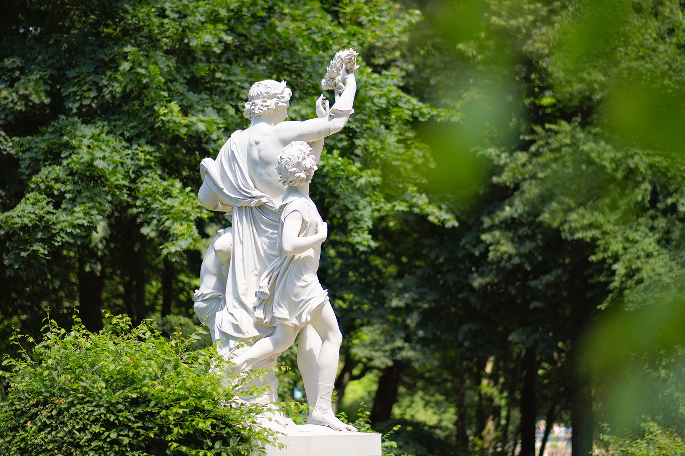
1852 kehrte er nach Dresden zurück, wo er 1853 als Schüler und Gehilfe im Atelier von Ernst Julius Hähnel (1811–91) wurde, dem zweiten wichtigen Bildhauer in der Dresdner Akademie. 1854 unternahm er eine Studienreise nach Rom, für die ihm 1855 auch das Rom-Stipendium der Dresdner Akademie bewilligt wurde. 1856 gründete er sein eigenes Atelier in Dresden.
Schilling wurde ab 1868 selbst zum Professor an der Kgl. Kunstakademie zu Dresden und beförderte als Lehrer zahlreicher Schüler den in dieser Epoche weltweit wirkenden Einfluss der Dresdner Bildhauerschule. Seine Bildhauerarbeiten sind stark von der Romantik und der Klassik geprägt und zeugen von historischen, literarischen und musikalischen Inspirationen.
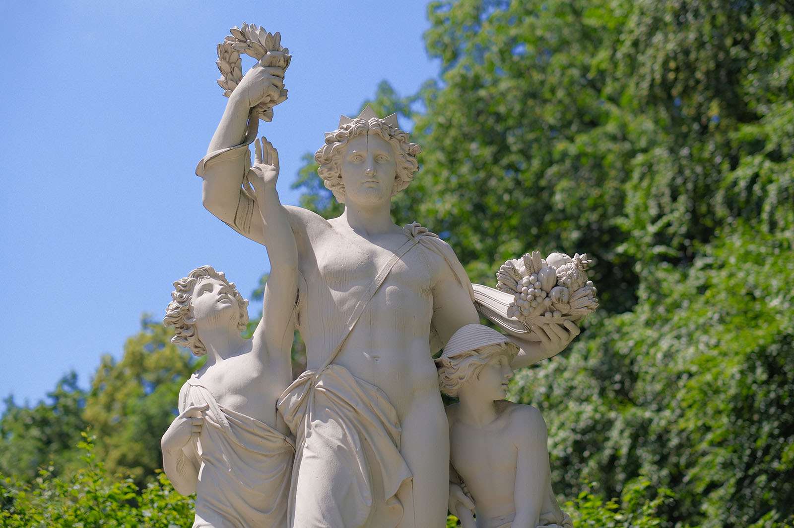
Mit seinen vier ab 1860 für die Freitreppe zur Brühlschen Terrasse entworfenen allegorischen Figuren der Tageszeiten begründete er seine weit über Dresden hinausreichende Anerkennung. Weitere bedeutende Werke sind das von 1871 bis 1883 bei Rüdesheim am Rhein errichtete Niederwalddenkmal sowie die Quadriga der Semperoper und das Reiterstandbild für König Johann von Sachsen. Für Chemnitz entwarf er 1888 auch das Grabmal des Industriellen Richard Hartmann, das heute auf dem Städtischen Friedhof in Bernsdorf an den "Lokomotivenkönig" erinnert.
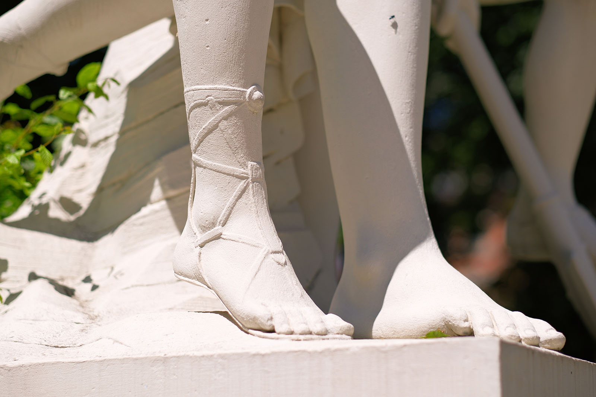
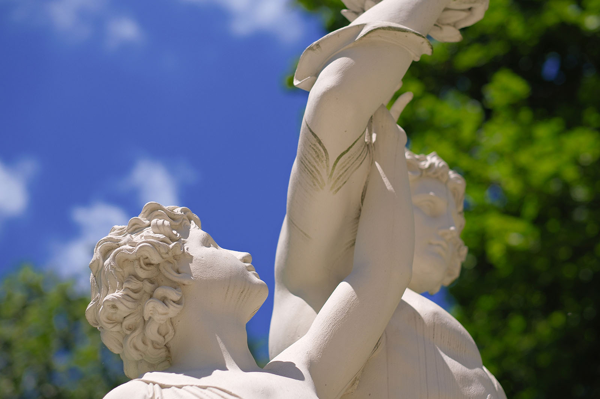
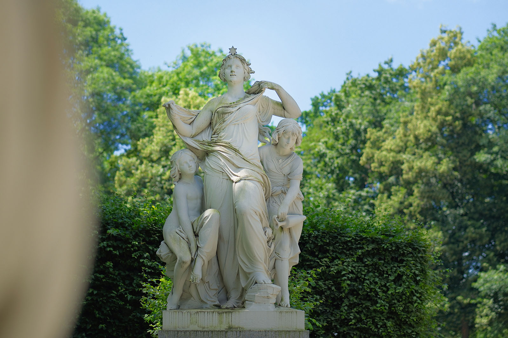
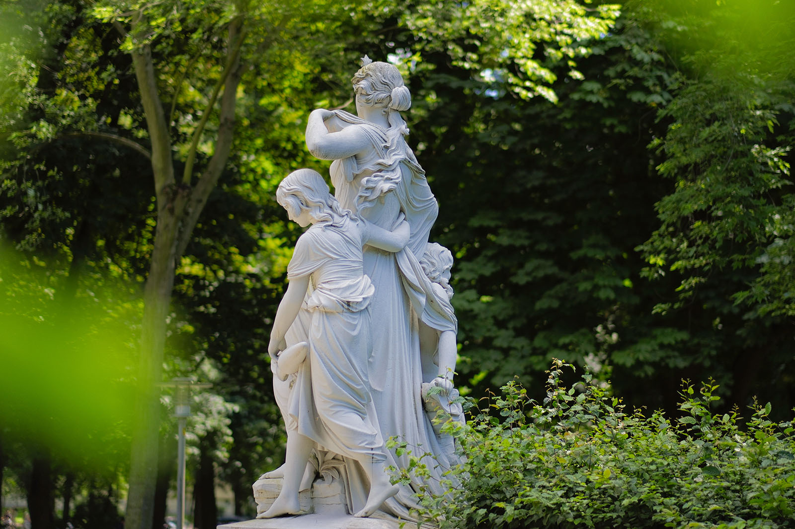
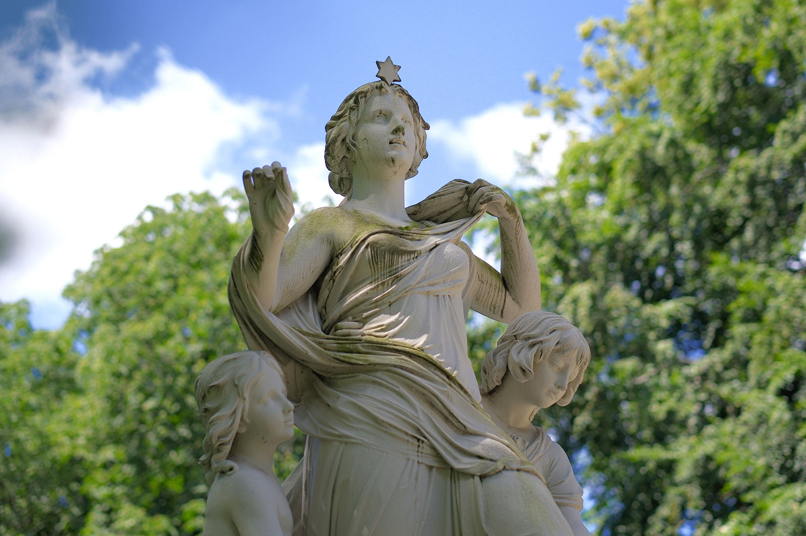
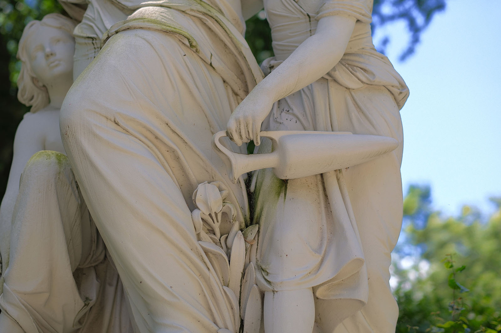
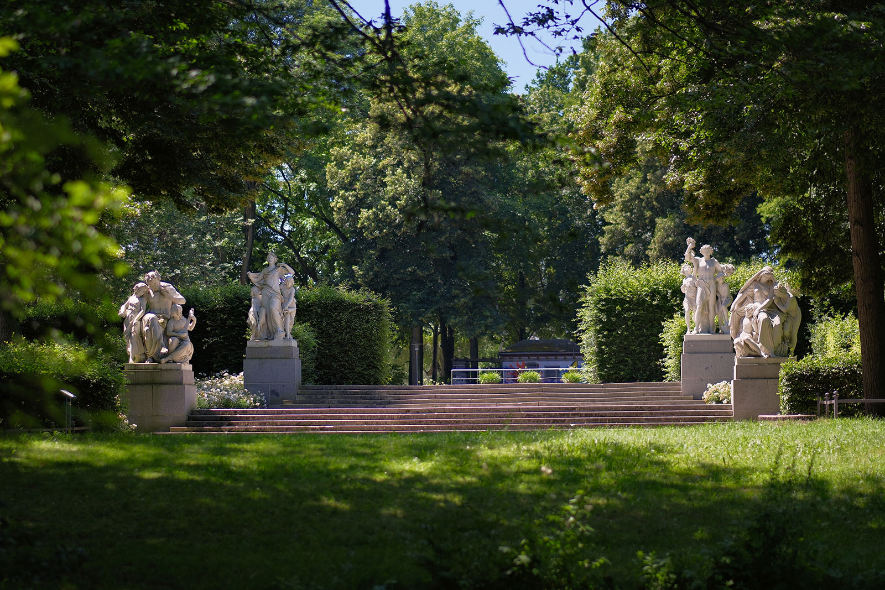